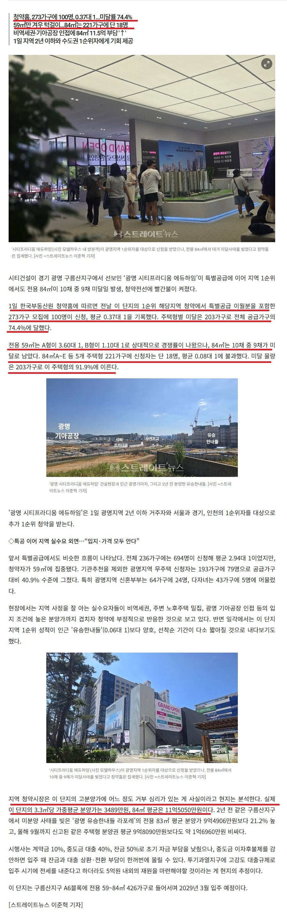

그것은 미달 났으니까...
지금 청약 넣으면 모두 당첨

그것은 미달 났으니까...
지금 청약 넣으면 모두 당첨
광명도 광명나름이지... 철산쪽은 거의 서울취급인데 반대쪽은 그냥 경기도잖아 ㅋㅋㅋㅋ
이거 광명이라 70% 안나오지 않나 다들 돈 많누 ㅜㅜ 하 시바.. 하급지 탈출해야 하는데
11억 ㅋㅋ
시티프라디움은 아파트도 아니지 않나?
그리고 11억이면 학군은 별로지만 유해시설도 없는 곳 들어가는데 굳이
11억으로 더 좋은곳 많으니 미달이지
미달은 다 이유가 있음
광명 11억이면 좀 더 모아서 평촌이나 하다못해 시흥을 갈듯 저기는 역조차도 머네
지하철도 겁나 먼데 저가격이냐고..
11억있으면 서울에서 살지
11억으로 어케 서울삼??
하급지 적은 평수는 11억으로 충분히 들어감
도봉구?
금천구도 가능
성북구도 11억이면 구축 84타입 널렸다.그리고 알지?대략 10-15년 된 구축이 더 튼튼한거.당장 네이버 부동산만 들어가도 잔뜩나와
노도강중금관구 국평으로 구축아파트 골라갈수있음
20평대면 충분히 살긴해
강동구도 있다
관악 봉천도 그정도면가능
강남3구/마용성 아니면
역세권 도보 10분거리 이상만되도 10억 언저리 아파트 많음
시티프라디움 애듀하임ㅋㅋㅋㅋ 요새 단지이름들 다 야랄났네
아우구스투스 그라드 하임라임
아니 소하리 기아차공장 있는곳 가봐라 ㅋㅋㅋㅋ 존나 멀다고 !!!! 소하동도 지하철 탈려면 시발시발 하면서 버스 타고 가는데
아니 위치보니까 ㅅㅂ 역도 멀고 별론데 가격이 왜이렇게 비싸냐?
와 저기도 11억이라니
신축이라도 저위치에 11억은
분양가..
11억이면 구축이긴 하지만 분당에서 집 구하고 남은걸로 내부 리모델링 까지 가능할꺼 같은데 ㅋㅋㅋ
광명은 철산 광명사거리 광명역
이쪽만 봐라
11억은 정신 나간거지
나중에는 그때가 쌌다도르임
미달났으면 할인분양하면 되는데
그건 또 곧죽어도 싫지?
광명이 무슨 11억
광명 철산은 20억임ㅋㅋㅋ
철산은 걍 가산디지털단지잖아
위치가 야랄났고 가격도 야랄났는데 당연히 미달되지
11억이면 갈데 많아
다른 아파트들도 오르기 전엔 여기 댓글이랑 반응이 똑같았을껄? ㅋㅋㅋ
11억 이지랄 ㅅㅂ ㅋㅋㅋㅋㅋㅋㅋㅋㅋㅋㅋㅋㅋㅋ
이야 광명이 11억 ㅋㅋㅋㅋㅋ
광명11억은 ㅅㅂㅋㅋ
주변이 횡하네
광명은 지역에 비해 너무 비싸 위치 진짜 개별론거같은데
위치 좋은데는 서울에도 가깝고 진짜 좋음
그냥 위치가 극과 극임
11억있음 걍 지방거점도시가서 조용히살래
철산쪽도 아니고 11억이면 차라리 안양이나 부천 인천 갈듯
11억이 없는데?